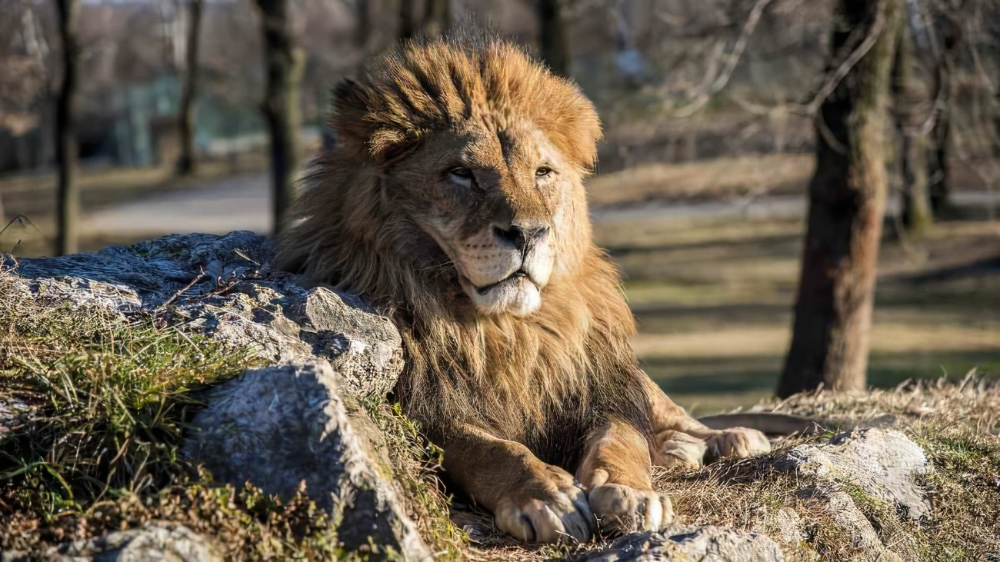

Leon
Gran mamífero carnívoro félido africano, de pelaje amarillo rojizo, con la cabeza grande, los dientes y las uñas muy fuertes, la cola larga y terminada en un fleco de cerdas, y cuyo macho se distingue por una larga melena. Usado en masculino referido a la especie.
tipos de leones

- León del norte (Panthera leo leo): Este grupo incluye leones que habitan en el oeste de África y en la India. Se caracteriza por tener una melena más oscura y una estructura corporal robusta. Es conocido también como león de África occidental o león de Atlas.
- León del sur (Panthera leo melanochaita): Este grupo se encuentra principalmente en el sur, este y centro de África. Los leones del sur tienden a ser más grandes y tienen una melena más clara en comparación con los leones del norte.
sub especies
- León de Katanga (Panthera leo bleyenberghi): Se encuentra en el sur de África y es conocido por su gran tamaño, alcanzando hasta 280 kg en los machos. Tiene una melena tupida y un pelaje de color arena.
- El león del Congo (Panthera leo azandica): también llamado león de África Central, es una subespecie que se distribuye en las llanuras del continente africano, sobre todo en Uganda y la República del Congo.
- El Panthera leo krugeri: llamado de Transvaal, de Sudáfrica o león africano, es una variedad de la zona meridional de África, hermana del león de Katanga, aunque lo supera en tamaño. Los machos de esta especie alcanzan hasta 2 metros y 50 centímetros de largo.
- León de Atlas:También llamado león de Barberia (Panthera leo leo), es una subespecie que se extinguió en libertad alrededor de 1942. Se sospecha que existen varios ejemplares en zoológicos, como los especímenes que se encuentra en el de Rabat (Marruecos). Sin embargo, el cruce con otras subespecies de león complican la tarea de criar individuos puros del león de Atlas